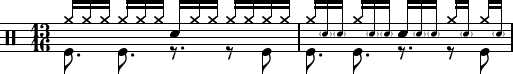

suivant: Débits complexes - 30/01/2019 monter: Cours 2018-2020 précédent: Morceau Jazz - 09/01/2019
En regardant : https://www.youtube.com/watch?v=ferZnZ0_rSM travaille double croches sur HH avec une seule main : rebond !
Fla à travailler : 1 accent sur 4, les autres combinaisons sont beaucoup plus dures à caser (mais on peut aussi faire 2 fla). Voir aussi les DoubleCroche HH de Steve Gadd (DrummerWorld).
Shuffle avec HH au pied pour le contre-temp.
Ecoute : Bill Stewart - Snide remarks
Pattern / Groove en 13/16, découper en pattern (ex 3 3 3 4).

Un peu de konnakol https://en.wikipedia.org/wiki/Konnakol.
Qqs leçons : https://timteissen.net/video_lessons/the-power-of-konnakol-1-introduction
En 7/4 : https://www.soundslice.com/slices/PzDcc/